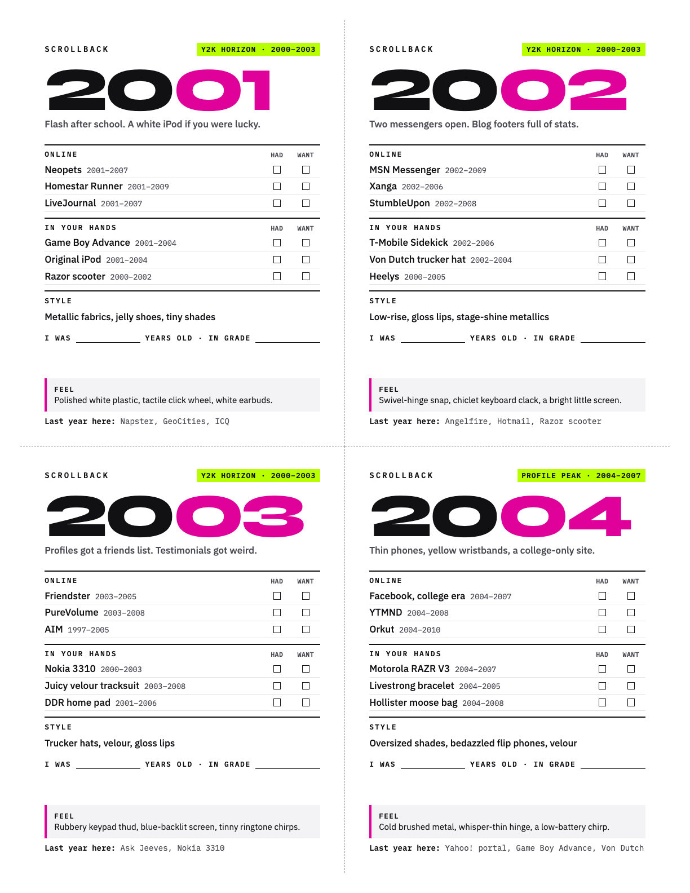
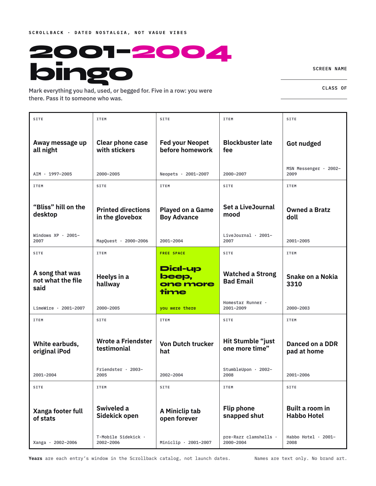

Print · US Letter · 2 pages
2001–2004, on paper.
Four year cards to cut out and a bingo sheet to pass around. Every site and object is a dated entry from the Scrollback catalog.

Page 1 · Year cardsOne card per year. Three sites, three objects, a style line, “I was __ years old.” Tick had or want.

Page 2 · 2001–2004 bingo24 dated squares, one free space. Five in a row: you were there.
PrintLetter, 100% scale. Mostly white, so it is light on ink.
CutPage 1 splits into four 4 × 5¼ in cards on the dashed lines.
SharePhoto your filled card. Ask a friend which year was theirs.
Years are each entry’s window in the Scrollback catalog, not launch dates. Brand names appear as text only; no logos or brand art.